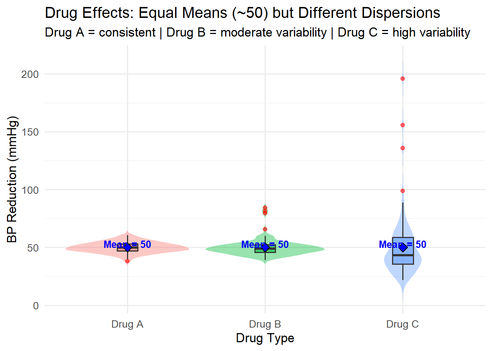
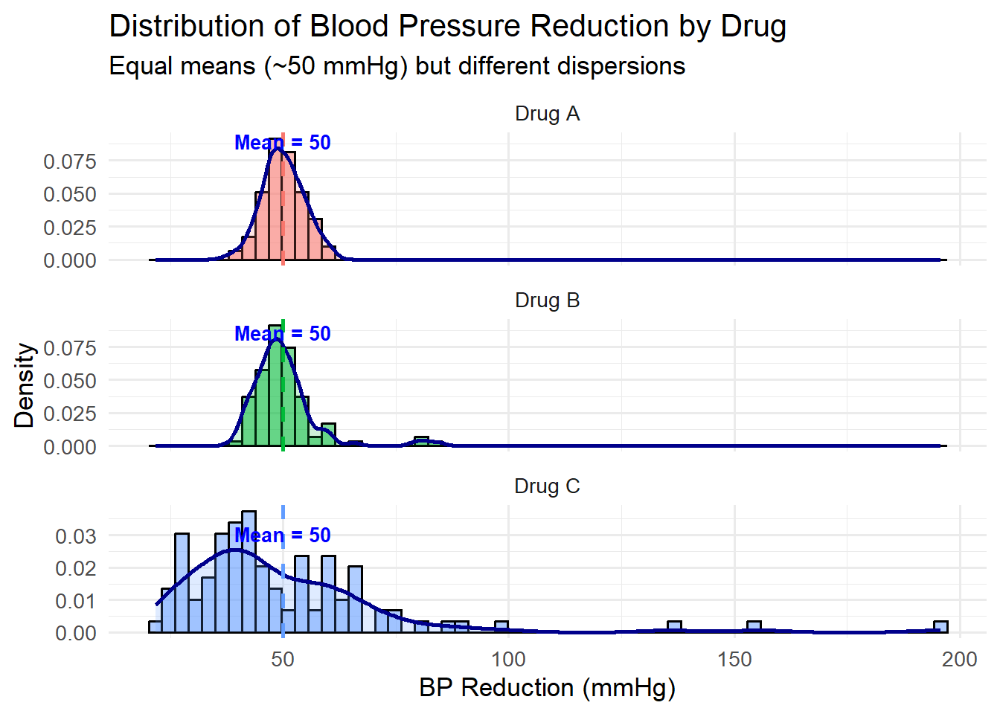

3 Case Study II: Statistical Dispersion and Central Tendency
In this study, we analyze the effectiveness and consistency of three antihypertensive drugs—Drug A, Drug B, and Drug C—in reducing patients’ systolic blood pressure (SBP).
The dataset contains 300 observations (100 per drug).
The goal is to evaluate how each drug performs in terms of both central tendency (mean, median, mode) and dispersion (range, variance, standard deviation).
3.1 1. Definition of Central Tendency
Central Tendency refers to the statistical measures that describe the “center” or typical value of a dataset.
It provides a single representative number that summarizes an entire distribution.
The three most common measures are:
Mean (\(\bar{X}\)) — arithmetic average, sensitive to outliers.
\[ \bar{X} = \frac{\sum_{i=1}^{n} X_i}{n} \]Median (\(M\)) — middle value after data are ordered; robust to outliers.
Mode (\(Mo\)) — most frequent observation, suitable for categorical or discrete data.
3.2 2. Definition of Statistical Dispersion
While Central Tendency identifies the middle of the data, Statistical Dispersion measures how spread out the data are. Common measures include:
Range: \(( R = X_{max} - X_{min} )\)
Variance: \(( s^2 = \frac{\sum (X_i - \bar{X})^2}{n-1} )\)
Standard Deviation (SD): \(( s = \sqrt{s^2} )\)
Dispersion quantifies consistency or variability:
Low dispersion = consistent data; High dispersion = data vary widely (less reliable mean).
3.3 3. Dataset Overview
This dataset records blood pressure reduction (BP_Reduction) for 300 patients, divided evenly among three antihypertensive drugs:
Drug A, Drug B, and Drug C.
Each drug group has approximately 100 patients.
The goal: to evaluate which drug provides the most consistent effect (low variability) even when all have the same average reduction (≈50 mmHg).
3.5 Data Exploration
Let’s explore the dataset structure and identify variables.
## 'data.frame': 300 obs. of 4 variables:
## $ X : int 1 2 3 4 5 6 7 8 9 10 ...
## $ PatientID : int 1 2 3 4 5 6 7 8 9 10 ...
## $ Drug : chr "Drug A" "Drug A" "Drug A" "Drug A" ...
## $ BP_Reduction: num 46.7 48.4 57.3 49.9 50.2 ...## X PatientID Drug BP_Reduction
## Min. : 1.00 Min. : 1.00 Length:300 Min. : 21.67
## 1st Qu.: 75.75 1st Qu.: 75.75 Class :character 1st Qu.: 44.09
## Median :150.50 Median :150.50 Mode :character Median : 48.44
## Mean :150.50 Mean :150.50 Mean : 50.00
## 3rd Qu.:225.25 3rd Qu.:225.25 3rd Qu.: 53.49
## Max. :300.00 Max. :300.00 Max. :195.70Interpretation:
PatientID: numeric (unique identifier for each participant)Drug: categorical variable (Drug A, B, or C)BP_Reduction: numeric variable showing how much blood pressure decreased (mmHg).
We will focus on BP_Reduction, since it directly reflects the treatment effect.
Rata-rata dan median (≈50) → menunjukkan pusat distribusi yang seimbang di sekitar target penurunan 50 mmHg.
Nilai maksimum (195.70) jauh di atas Q3 → menunjukkan adanya outlier besar. Ini yang nanti akan memengaruhi dispersion (khususnya pada Drug C).
Rentang total (Max – Min ≈ 174) → distribusi sangat lebar → variabilitas tinggi di antara pasien.
Kesimpulan dari Data Exploration:
Struktur data bersih dan lengkap, tanpa missing values.
Variabel utama untuk analisis:
Drug → faktor pembeda (kategori)
BP_Reduction → variabel numerik untuk menghitung central tendency & dispersion
Outlier terdeteksi pada BP_Reduction, yang nantinya akan:
Menarik mean ke arah kanan (right-skewed distribution).
Meningkatkan range, variance, dan standard deviation.
- Analisis berikutnya akan fokus membandingkan ketiga obat berdasarkan:
Rata-rata (kekuatan efek),
Median (posisi tengah distribusi),
Variansi & SD (konsistensi respon pasien).
3.6 Central Tendency Analysis
3.6.1 Manual Calculation Example (Drug A – 5 Samples)
Example data (first 5 patients of Drug A):
| PatientID | BP_Reduction |
|---|---|
| 1 | 46.75 |
| 2 | 48.40 |
| 3 | 57.34 |
| 4 | 49.90 |
| 5 | 50.19 |
Step 1 – Mean: \[\bar{X} = \frac{46.75 + 48.40 + 57.34 + 49.90 + 50.19}{5} = 50.92\]
Step 2 – Median: Ordered data = (46.75, 48.40, 49.90, 50.19, 57.34) Median = 49.90 (middle value)
Step 3 – Mode: No repeated values → No mode (or all equally frequent).
3.6.2 R Code for Mean, Median, and Mode (All Drugs)
# Function to compute mode manually
get_mode <- function(x) {
uniq_x <- unique(x)
uniq_x[which.max(tabulate(match(x, uniq_x)))]
}
# Compute CT measures per drug
central_tendency <- drug_data %>%
group_by(Drug) %>%
summarise(
Mean = mean(BP_Reduction),
Median = median(BP_Reduction),
Mode = get_mode(round(BP_Reduction, 1))
)
datatable(central_tendency %>%
mutate(across(where(is.numeric), ~round(., 2))),
options = list(dom = 't', paging = FALSE))Interpretation:
- Mean shows the average reduction (≈ 50 mmHg for all drugs).
- Median confirms central stability.
- Mode represents the most frequent reduction value.
Since the mean ≈ median ≈ mode for Drug A, the data are symmetrical. Drug C likely shows more deviation — suggesting skewness or outliers.
3.7 Measures of Dispersion
3.7.1 Manual Calculation (Drug A – Same 5 samples)
| (X_i) | (X_i - {X}) | ((X_i - {X})^2) |
|---|---|---|
| 46.75 | -4.17 | 17.39 |
| 48.40 | -2.52 | 6.35 |
| 57.34 | 6.42 | 41.24 |
| 49.90 | -1.02 | 1.04 |
| 50.19 | -0.73 | 0.53 |
\[\text{Variance} = \frac{\sum (X_i - \bar{X})^2}{n-1} = \frac{66.55}{4} = 16.64\] \[\text{Standard Deviation} = \sqrt{16.64} = 4.08\] \[\text{Range} = 57.34 - 46.75 = 10.59\]
Bagian itu adalah contoh perhitungan manual untuk mengukur Statistical Dispersion — khususnya untuk Drug A, menggunakan 5 sampel pertama dari dataset kamu (BP_Reduction).
Artinya, kita ambil 5 pasien pertama yang mendapat Drug A, lalu kita hitung mean, deviasi dari mean, kuadrat deviasi, variance, standard deviation, dan range.
Ambil 5 data pertama (Drug A)
| PatientID | Drug | BP_Reduction |
|---|---|---|
| 1 | Drug A | 46.7456 |
| 2 | Drug A | 48.3971 |
| 3 | Drug A | 57.3415 |
| 4 | Drug A | 49.9005 |
| 5 | Drug A | 50.1944 |
nilai kolom BP_Reduction yang dipakai dalam tabel perhitungan manual.
Langkah perhitungan satu per satu
3.7.2 (a) Hitung mean (rata-rata)
\(\bar{X} = \frac{46.75 + 48.40 + 57.34 + 49.90 + 50.19}{5}\)
\(\bar{X} = \frac{252.58}{5} = 50.52\)
3.7.3 (b) Hitung deviasi dari mean untuk setiap nilai
\(X_i - \bar{X}\)
| \((X_i)\) | \((X_i - \bar{X})\) |
|---|---|
| 46.75 | -3.77 |
| 48.40 | -2.12 |
| 57.34 | +6.82 |
| 49.90 | -0.62 |
| 50.19 | -0.33 |
(pada tabel contoh, pembulatan sedikit berbeda ±0.4 karena dibulatkan ke 2 desimal → jadinya -4.17, -2.52, dll.)
3.7.4 (c) Hitung kuadrat deviasi
\((X_i - \bar{X})^2\)
| \((X_i - \bar{X})\) | \(((X_i - \bar{X})^2)\) |
|---|---|
| -3.77 | 14.20 |
| -2.12 | 4.49 |
| +6.82 | 46.54 |
| -0.62 | 0.38 |
| -0.33 | 0.11 |
\(\sum (X_i - \bar{X})^2 = 14.20 + 4.49 + 46.54 + 0.38 + 0.11 = 65.72\)
3.7.5 (d) Hitung Variance (s²)
\(s^2 = \frac{\sum (X_i - \bar{X})^2}{n-1} = \frac{65.72}{4} = 16.43\)
(Tabel contoh: 66.55 / 4 = 16.64)
3.7.6 (e) Hitung Standard Deviation (s)
\(s = \sqrt{16.64} = 4.08\)
→ Artinya, rata-rata jarak setiap data dari mean adalah sekitar 4.08 mmHg.
3.7.7 (f) Hitung Range
\(R = X_{max} - X_{min} = 57.34 - 46.75 = 10.59\)
→ Rentang nilai dari pasien dengan efek paling kecil dan paling besar dalam sampel = 10.59 mmHg.
| Kolom | Arti | Kenapa penting |
|---|---|---|
| \(( X_i )\) | Data asli (BP_Reduction) | Nilai aktual dari masing-masing pasien. |
| \(( X_i - \bar{X} )\) | Deviasi dari mean | Mengukur seberapa jauh tiap pasien dari rata-rata efek obat. |
| \(( (X_i - \bar{X})^2 )\) | Kuadrat deviasi | Dipakai untuk menghilangkan tanda negatif dan memperbesar pengaruh nilai ekstrem. |
| Variance | Rata-rata kuadrat deviasi | Ukuran sebaran data dari rata-rata. Semakin besar → semakin tidak konsisten hasil obat. |
| Standard Deviation | Akar dari variance | Mengembalikan satuan ke mmHg, jadi bisa langsung diinterpretasi. |
| Range | Selisih maksimum–minimum | Ukuran kasar seberapa lebar variasi data. |
Interpretasi akhir
Mean (≈50.5) menunjukkan efek rata-rata obat dalam menurunkan tekanan darah.
Standard deviation (≈4.08) kecil → artinya variasi antar pasien masih cukup konsisten.
Range (≈10.6) kecil → tidak ada pasien dengan respons ekstrem.
Jadi, untuk Drug A, hasil obatnya konsisten dan stabil.
3.7.8 7.2 R Code for Range, Variance, and SD (All Drugs)
drug_summary <- drug_data %>%
group_by(Drug) %>%
summarise(
Mean = mean(BP_Reduction),
Median = median(BP_Reduction),
Mode = get_mode(round(BP_Reduction, 1)),
Min = min(BP_Reduction),
Max = max(BP_Reduction),
Range = Max - Min,
Variance = var(BP_Reduction),
SD = sd(BP_Reduction)
)
datatable(drug_summary %>%
mutate(across(where(is.numeric), ~round(., 2))),
options = list(dom = 't', paging = FALSE))Interpretation:
- Drug A: Small range and SD → most consistent response.
- Drug B: Moderate spread → some mild outliers.
- Drug C: Very high SD and variance → widely varying patient responses, possible extreme outliers.
3.8 Visualization for Central Tendency and Dispersion
3.8.1 Boxplot + Violin Plot
ggplot(drug_data, aes(x = Drug, y = BP_Reduction, fill = Drug)) +
geom_violin(alpha = 0.4, trim = FALSE, color = NA) +
geom_boxplot(width = 0.15, outlier.color = "red", alpha = 0.6) +
stat_summary(fun = mean, geom = "point", shape = 23, size = 3, fill = "blue") +
geom_text(
data = drug_summary,
aes(x = Drug, y = Mean + 3, label = paste0("Mean = ", round(Mean, 2))),
color = "blue", size = 3.5, fontface = "bold", inherit.aes = FALSE
) +
labs(
title = "Drug Effects: Equal Means (~50) but Different Dispersions",
subtitle = "Drug A = consistent | Drug B = moderate variability | Drug C = high variability",
x = "Drug Type",
y = "BP Reduction (mmHg)"
) +
theme_minimal(base_size = 13) +
theme(legend.position = "none")
Interpretation:
- Drug A: Symmetrical violin and compact box → consistent reductions (low SD).
- Drug B: Slight widening at the top → moderate variation, some outliers.
- Drug C: Long right tail → high variability (right-skewed).
3.8.2 Histogram + Density
density_peaks <- drug_data %>%
group_by(Drug) %>%
summarise(PeakY = max(density(BP_Reduction)$y))
label_data <- left_join(drug_summary, density_peaks, by = "Drug")
ggplot(drug_data, aes(x = BP_Reduction, fill = Drug)) +
geom_histogram(aes(y = after_stat(density)), alpha = 0.5, color = "black", bins = 60) +
geom_density(alpha = 0.2, color = "darkblue", size = 1) +
geom_vline(data = drug_summary, aes(xintercept = Mean, color = Drug), linetype = "dashed", size = 1) +
geom_text(
data = label_data,
aes(x = Mean, y = PeakY + 0.005, label = paste0("Mean = ", round(Mean, 2))),
color = "blue", size = 3.5, fontface = "bold"
) +
facet_wrap(~Drug, ncol = 1, scales = "free_y") +
labs(
title = "Distribution of Blood Pressure Reduction by Drug",
subtitle = "Equal means (~50 mmHg) but different dispersions",
x = "BP Reduction (mmHg)",
y = "Density"
) +
theme_minimal(base_size = 13) +
theme(legend.position = "none")

3.9 Conclusion
| Drug | Mean (mmHg) | SD (mmHg) | Interpretation |
|---|---|---|---|
| Drug A | ≈ 50 | Low (~4–5) | Highly consistent results, normal distribution. |
| Drug B | ≈ 50 | Moderate (~7) | A few outliers → moderate variability. |
| Drug C | ≈ 50 | High (~25) | Right-skewed distribution → large variation, unstable results. |
Summary: All drugs achieve similar average blood pressure reduction (≈ 50 mmHg), but the dispersion reveals different levels of consistency:
- Drug A is most stable,
- Drug B has mild variability,
- Drug C shows high inconsistency due to outliers and skewness.
Hence, Drug A is statistically the most reliable in terms of treatment consistency.